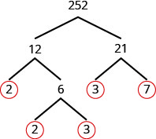

ماخذ: OpenStax Elementary Algebra 2e، باب Foundations، سبق «پورے عدداں دی جان پہچان»۔ ایتھے اوّلی اجزا تے سانجھے مضاعفاں والا پورا سیکشن تے اوہدے نال اہم خیالاں دی دہرائی ترجمہ کیتی گئی اے؛ پورا سبق یا پوری کتاب نہیں۔
اوّلی اجزا دیاں ضرب والیاں صورتاں تے گھٹ توں گھٹ سانجھے مضاعف لبھو
ریاضی وچ اکو خیال دی گل کرن دے اکثر کئی طریقے ہوندے نیں۔ ہُن تک اسیں ویکھیا اے کہ جے m، n دا مضاعف اے، تاں اسیں آکھ سکدے آں کہ m، n نال پورا ونڈیا جاندا اے۔ مثال دے طور اُتے، کیوں جے 72، 8 دا مضاعف اے، اسیں آکھدے آں کہ 72، 8 نال پورا ونڈیا جاندا اے۔ کیوں جے 72، 9 دا مضاعف اے، اسیں آکھدے آں کہ 72، 9 نال پورا ونڈیا جاندا اے۔ ایہہ گل اک ہور طریقے نال وی دَسی جا سکدی اے۔
حساب ایہہ اے: ایس لئی اسیں آکھدے آں کہ 8 تے 9، 72 دے ضربی اجزا نیں۔ جدوں اسیں اینج لکھدے آں: تاں اسیں آکھدے آں کہ 72 نوں ضربی اجزا دی صورت وچ لکھ لیا اے۔

چھوٹی سکرین اُتے پوری شکل ویکھن لئی پاسے سرکاؤ، یا اصل شکل وکھری کھولو۔
72 نوں ضربی اجزا دی صورت وچ لکھن دے ہور طریقے ایہہ نیں: بہتّر دے کئی ضربی اجزا نیں: 1، 2، 3، 4، 6، 8، 9، 12، 18، 36 تے 72۔
ایس ماخذی گل نال ساڈی وکھری درستی تے وضاحت وی پڑھو۔
کجھ عدداں دے، جیویں 72 دے، کئی ضربی اجزا ہوندے نیں۔ ہور عدداں دے صرف دو ضربی اجزا ہوندے نیں۔
2 توں 19 تک دے گنتی دے عدد اوہناں دے ضربی اجزا نال شکل A10-004.1 وچ دِتے نیں۔ ہر عدد لئی ایہہ ضرور پرکھو کہ تسی اوہدے نال لگے «اوّلی» یا «مرکب» دے ناں نال متفق او!
![ساڈی درست کیتی وضاحت: تصویر وچ نال نال دو پینل نیں، تے وچکار خالی تھاں اے۔ ہر پینل دے تِن کالم تے دس سطراں نیں: اک سرلیکھاں والی سطر تے عدداں دیاں نَوں سطراں۔ دوہاں دے سرلیکھ کھبے توں سجّے «عدد»، «ضربی اجزا» تے «اوّلی یا مرکب؟» نیں۔ کھبا پینل 2 توں 10 تک تے سجّا پینل 11 توں 19 تک دے عدد وکھاندا اے۔ کھبے پینل وچ، سرلیکھاں توں تھلے پہلی سطر دے خانے کھبے توں سجّے «2»، «1، 2» تے «اوّلی» نیں۔ اگلی سطر دے خانے «3»، «1، 3» تے «اوّلی» نیں۔ اگلی سطر دے خانے «4»، «1، 2، 4» تے «مرکب» نیں۔ اگلی سطر دے خانے «5»، «1، 5» تے «اوّلی» نیں۔ اگلی سطر دے خانے «6»، «1، 2، 3، 6» تے «مرکب» نیں۔ اگلی سطر دے خانے «7»، «1، 7» تے «اوّلی» نیں۔ اگلی سطر دے خانے «8»، «1، 2، 4، 8» تے «مرکب» نیں۔ اگلی سطر دے خانے «9»، «1، 3، 9» تے «مرکب» نیں۔ سبھ توں تھلّی سطر دے خانے «10»، «1، 2، 5، 10» تے «مرکب» نیں۔ سجّے پینل وچ، سرلیکھاں توں تھلے پہلی سطر دے خانے کھبے توں سجّے «11»، «1، 11» تے «اوّلی» نیں۔ اگلی سطر دے خانے «12»، «1، 2، 3، 4، 6، 12» تے «مرکب» نیں۔ اگلی سطر دے خانے «13»، «1، 13» تے «اوّلی» نیں۔ اگلی سطر دے خانے «14»، «1، 2، 7، 14» تے «مرکب» نیں۔ اگلی سطر دے خانے «15»، «1، 3، 5، 15» تے «مرکب» نیں۔ اگلی سطر دے خانے «16»، «1، 2، 4، 8، 16» تے «مرکب» نیں۔ اگلی سطر دے خانے «17»، «1، 17» تے «اوّلی» نیں۔ اگلی سطر دے خانے «18»، «1، 2، 3، 6، 9، 18» تے «مرکب» نیں۔ سبھ توں تھلّی سطر دے خانے «19»، «1، 19» تے «اوّلی» نیں۔](../assets/a10/CNX_ElemAlg_Figure_01_01_015_img_new.jpg)
چھوٹی سکرین اُتے پوری شکل ویکھن لئی پاسے سرکاؤ، یا اصل شکل وکھری کھولو۔
ایس ماخذی گل نال ساڈی وکھری درستی تے وضاحت وی پڑھو۔
20 توں چھوٹے اوّلی عدد ایہہ نیں: 2، 3، 5، 7، 11، 13، 17 تے 19۔ غور کرو کہ اکو جفت اوّلی عدد 2 اے۔
مرکب عدد نوں اوّلی عدداں دے اکو اک ضرب دے حاصل دے طور اُتے لکھیا جا سکدا اے۔ ایہنوں اوہ عدد دی اوّلی اجزا دی ضرب والی صورت آکھدے نیں۔ مرکب عدد دی اوّلی اجزا دی ضرب والی صورت لبھنا ایس کورس وچ اگے کم آوے گا۔
ایس ماخذی گل نال ساڈی وکھری درستی تے وضاحت وی پڑھو۔
مرکب عدد دی اوّلی اجزا دی ضرب والی صورت لبھن لئی، اوہ عدد دے کوئی دو ضربی اجزا لبھو تے اوہناں نال دو ٹہنیاں بناؤ۔ جے کوئی جزو اوّلی اے، تاں اوہ ٹہنی پوری ہو گئی اے۔ اوہ اوّلی عدد دے دوالے گھیرا پاؤ!
ایس ماخذی گل نال ساڈی وکھری درستی تے وضاحت وی پڑھو۔
جے جزو اوّلی نہیں، تاں اوہ عدد دے دو ضربی اجزا لبھو تے ایہہ کم جاری رکھو۔ جدوں ساریاں ٹہنیاں دے آخر اُتے گھیرے والے اوّلی عدد آ جان، تاں اجزا لبھن دا کم پورا ہو جاندا اے۔ ہُن مرکب عدد نوں اوّلی عدداں دے ضرب دے حاصل دے طور اُتے لکھیا جا سکدا اے۔
حل کیتی مثال 7
مرکب عدد دی اوّلی اجزا دی ضرب والی صورت کیویں لبھنی اے
48 نوں ضربی اجزا دی صورت وچ لکھو۔
حل

چھوٹی سکرین اُتے پوری شکل ویکھن لئی پاسے سرکاؤ، یا اصل شکل وکھری کھولو۔
ایس ماخذی گل نال ساڈی وکھری درستی تے وضاحت وی پڑھو۔

چھوٹی سکرین اُتے پوری شکل ویکھن لئی پاسے سرکاؤ، یا اصل شکل وکھری کھولو۔
![ساڈی درست کیتی وضاحت: تِن کالماں والی تصویر وچ قدم 3 اے۔ کھبے کالم دی ہدایت اے: جیہڑا جزو اوّلی نہیں، اوہنوں دو ضربی اجزا دے ضرب دے حاصل دے طور اُتے لکھ کے کم جاری رکھو۔ وچلے کالم وچ دِتا اے کہ 24 اوّلی نہیں؛ اوہنوں 2 ہور ضربی اجزا وچ ونڈو۔ سجّے کالم دے اُتلے رُکھ وچ 48 دیاں ٹہنیاں 2 تے 24 نوں جاندیاں نیں؛ ایس 2 دے دوالے گھیرا اے، تھلے لکیر نہیں۔ 24 دیاں ٹہنیاں 4 تے 6 نوں جاندیاں نیں۔ وچلی ہدایت آکھدی اے کہ 4 تے 6 وی اوّلی نہیں، ہر اک نوں دو اجزا وچ ونڈو۔ سجّے کالم دے تھلّے والے رُکھ وچ 4 دیاں ٹہنیاں 2 تے 2 نوں، تے 6 دیاں ٹہنیاں 2 تے 3 نوں جاندیاں نیں؛ ایہناں ساریاں آخری گنتیاں دے دوالے گھیرا اے۔ وچلے کالم دی آخری ہدایت 2 تے 3 دے اوّلی ہون کرکے اوہناں دوالے گھیرا پاؤن نوں آکھدی اے۔](../assets/a10/CNX_ElemAlg_Figure_01_01_016c_new.jpg)
چھوٹی سکرین اُتے پوری شکل ویکھن لئی پاسے سرکاؤ، یا اصل شکل وکھری کھولو۔
ایس ماخذی گل نال ساڈی وکھری درستی تے وضاحت وی پڑھو۔

چھوٹی سکرین اُتے پوری شکل ویکھن لئی پاسے سرکاؤ، یا اصل شکل وکھری کھولو۔
اسیں آکھدے آں کہ ، 48 دی اوّلی اجزا دی ضرب والی صورت اے۔ عام طور اُتے اسیں اوّلی عدد چھوٹے توں وڈے دی ترتیب وچ لکھدے آں۔ اپنا جواب پرکھن لئی ضربی اجزا نوں ضرور ضرب دیو!
جے اسیں شروع وچ 48 نوں کسے ہور طریقے نال ضربی اجزا دی صورت وچ لکھدے، مثال دے طور اُتے اینج: تاں وی نتیجہ اکو ہوندا۔ اوّلی اجزا دی ضرب والی صورت پوری کرو تے ایہہ گل آپ پرکھو۔
حل کیتی مثال 8
252 دی اوّلی اجزا دی ضرب والی صورت لبھو۔
حل
| قدم 1۔ دو ضربی اجزا لبھو جیہناں دی ضرب دا حاصل 252 ہووے۔ 12 تے 21 اوّلی نہیں۔ 12 تے 21 نوں دو دو ہور ضربی اجزا وچ ونڈو۔ ایہہ کم اوہدوں تک جاری رکھو جدوں تک سارے اوّلی عدداں دے اجزا نہ بن جان۔ |
 چھوٹی سکرین اُتے پوری شکل ویکھن لئی پاسے سرکاؤ، یا اصل شکل وکھری کھولو۔ |
| قدم 2۔ 252 نوں سارے گھیرے والے اوّلی عدداں دے ضرب دے حاصل دے طور اُتے لکھو۔ |
{kind=link}
سارے کالم ویکھن لئی لوڑ پئے تے جدول نوں پاسے سرکاؤ۔
ایس ماخذی گل نال ساڈی وکھری درستی تے وضاحت وی پڑھو۔
ایس ماخذی گل نال ساڈی وکھری درستی تے وضاحت وی پڑھو۔
مضاعفاں تے اوّلی عدداں نوں ویکھن دی اک وجہ ایہہ اے کہ ایہناں طریقیاں نال دو عدداں دا گھٹ توں گھٹ سانجھا مضاعف لبھیا جا سکدا اے۔ ایہہ اوہدوں کم آوے گا جدوں اسیں وکھرے مخرجاں والیاں کسراں نوں جمع یا گھٹاؤ کردے آں۔ گھٹ توں گھٹ سانجھا مضاعف لبھن لئی دو طریقے سبھ توں ودھ ورتے جاندے نیں، تے اسیں دوہاں نوں ویکھاں گے۔
پہلا طریقہ مضاعفاں دی فہرست بناؤن والا اے۔ 12 تے 18 دا گھٹ توں گھٹ سانجھا مضاعف لبھن لئی، اسیں 12 تے 18 دے پہلے کجھ مضاعف لکھدے آں:
![عدداں دیاں دو سطراں وکھائیاں گئیاں نیں۔ پہلی سطر 12 توں شروع ہوندی اے، فیر دو نقطے، فیر 12، 24، 36، 48، 60، 72، 84، 96، 108 تے اگے جاری رہن والے نقطے نیں۔ 36، 72 تے 108 موٹی لکھت وچ لال رنگ نال لکھے نیں۔ دوجی سطر 18 توں شروع ہوندی اے، فیر دو نقطے، فیر 18، 36، 54، 72، 90، 108 تے اگے جاری رہن والے نقطے نیں۔ ایتھے وی 36، 72 تے 108 موٹی لکھت وچ لال رنگ نال لکھے نیں۔ تھلّی سطر اُتے «سانجھے مضاعف»، دو نقطے تے عدد 36، 72 تے 108 لال رنگ وچ نیں۔ اوہدے توں اک سطر تھلے «گھٹ توں گھٹ سانجھا مضاعف»، دو نقطے تے عدد 36 نیلے رنگ وچ اے۔](../assets/a10/CNX_ElemAlg_Figure_01_01_018_img_new.jpg)
چھوٹی سکرین اُتے پوری شکل ویکھن لئی پاسے سرکاؤ، یا اصل شکل وکھری کھولو۔
غور کرو کہ کجھ عدد دوہاں فہرستاں وچ آندے نیں۔ ایہہ 12 تے 18 دے سانجھے مضاعف نیں۔
اسیں ویکھدے آں کہ 12 تے 18 دے پہلے کجھ سانجھے مضاعف 36، 72 تے 108 نیں۔ کیوں جے 36 سانجھے مضاعفاں وچوں سبھ توں چھوٹا اے، اسیں اوہنوں گھٹ توں گھٹ سانجھا مضاعف آکھدے آں۔ اسیں اکثر ایس دا چھوٹا ناں LCM ورتدے آں۔
طریقے والے خانے وچ LCM لبھن دے قدم دِتے نیں؛ اوہ اوّلی اجزا والا طریقہ ورتیا گیا اے جیہڑا اسیں اُتے 12 تے 18 لئی ورتیا سی۔
ایس ماخذی گل نال ساڈی وکھری درستی تے وضاحت وی پڑھو۔
حل کیتی مثال 9
مضاعفاں دی فہرست بنا کے 15 تے 20 دا گھٹ توں گھٹ سانجھا مضاعف لبھو۔
حل
| 15 تے 20 دے پہلے کجھ مضاعفاں دیاں فہرستاں بناؤ تے اوہناں نال گھٹ توں گھٹ سانجھا مضاعف لبھو۔ | چھوٹی سکرین اُتے پوری شکل ویکھن لئی پاسے سرکاؤ، یا اصل شکل وکھری کھولو۔ |
| سبھ توں چھوٹا اوہ عدد لبھو جیہڑا دوہاں فہرستاں وچ آندا اے۔ | دوہاں فہرستاں وچ آون والا پہلا عدد 60 اے، سو 60، 15 تے 20 دا گھٹ توں گھٹ سانجھا مضاعف اے۔ |
{kind=link}
سارے کالم ویکھن لئی لوڑ پئے تے جدول نوں پاسے سرکاؤ۔
غور کرو کہ 120 وی دوہاں فہرستاں وچ اے۔ ایہہ سانجھا مضاعف اے، پر گھٹ توں گھٹ سانجھا مضاعف نہیں۔
دو عدداں دا گھٹ توں گھٹ سانجھا مضاعف لبھن دا ساڈا دوجا طریقہ اوّلی اجزا والا طریقہ اے۔ آؤ 12 تے 18 دا LCM مُڑ لبھیے؛ ایس واری اوہناں دے اوّلی ضربی اجزا ورتیے۔
حل کیتی مثال 10
اوّلی اجزا دے طریقے نال گھٹ توں گھٹ سانجھا مضاعف کیویں لبھنا اے
اوّلی اجزا دے طریقے نال 12 تے 18 دا گھٹ توں گھٹ سانجھا مضاعف (LCM) لبھو۔
حل
![ساڈی وضاحت: چار قدماں والے سلسلے دی پہلی تصویر اے، جیہدے تِن کالم نیں۔ کھبا کالم «قدم 1» آکھدا اے: ہر عدد نوں اوّلی عدداں دے ضرب دے حاصل دے طور اُتے لکھو۔ وچلا کالم خالی اے۔ سجّے کالم وچ ضربی اجزا دے دو رُکھ نیں۔ پہلے رُکھ دا 18، 3 تے 6 وچ ونڈیا اے؛ 6 اگے 2 تے 3 وچ ونڈیا اے۔ سارے آخری اوّلی عدداں 3، 2 تے 3 دے دوالے گھیرا اے۔ دوجے رُکھ دا 12، 3 تے 4 وچ ونڈیا اے؛ 4 اگے 2 تے 2 وچ ونڈیا اے۔ سارے آخری اوّلی عدداں 3، 2 تے 2 دے دوالے گھیرا اے۔ باقی تِن قدم اگلیاں تصویراں وچ نیں، ایس اکیلی تصویر وچ چار سطراں نہیں۔](../assets/a10/CNX_ElemAlg_Figure_01_01_020a_new.jpg)
چھوٹی سکرین اُتے پوری شکل ویکھن لئی پاسے سرکاؤ، یا اصل شکل وکھری کھولو۔
ایس ماخذی گل نال ساڈی وکھری درستی تے وضاحت وی پڑھو۔
![اک سطر تھلے، پہلے خانے دیاں ہدایتاں آکھدیاں نیں: «قدم 2۔ ہر عدد دے اوّلی اجزا لکھو۔ جتھے ہو سکے، اوّلی اجزا نوں اُتے تھلے ملا کے لکھو۔» دوجے خانے دیاں ہدایتاں آکھدیاں نیں: «12 دے اوّلی اجزا لکھو۔ 18 دے اوّلی اجزا لکھو۔ جتھے ہو سکے، 12 دے اوّلی اجزا دے تھلے اوہی اجزا لکھو۔ جے ایہہ نہ ہو سکے، تاں نواں کالم بناؤ۔» تیجے خانے وچ 12 دی اوّلی اجزا دی ضرب والی صورت، مساوات 12 برابر 2 ضرب 2 ضرب 3 دے طور اُتے لکھی اے۔ ایس مساوات دے تھلے اک ہور مساوات 18 دی اوّلی اجزا دی ضرب والی صورت، 18 برابر 2 ضرب 3 ضرب 3، وکھاندی اے۔ دوہاں مساواتاں دے برابر والے نشان اُتے تھلے اک سیدھ وچ نیں۔ 12 دی اوّلی اجزا دی ضرب والی صورت دا پہلا 2، 18 دی اوّلی اجزا دی ضرب والی صورت دے 2 دے اُتے اے۔ 12 دی صورت دے دوجے 2 تھلے، 18 دی صورت وچ خالی تھاں اے۔ 12 دی صورت دے 3 تھلے، 18 دی صورت دا پہلا 3 اے۔ اوّلی اجزا دی ضرب والی صورت دے دوجے 3 دے اُتے، 12 دی صورت وچوں کوئی جزو نہیں۔](../assets/a10/CNX_ElemAlg_Figure_01_01_020b_new.jpg)
چھوٹی سکرین اُتے پوری شکل ویکھن لئی پاسے سرکاؤ، یا اصل شکل وکھری کھولو۔
![اک سطر تھلے، پہلے خانے دیاں ہدایتاں آکھدیاں نیں: «ہر کالم دا عدد تھلے لے آؤ۔» دوجا خانہ خالی اے۔ تیجے خانے وچ 12 تے 18 دیاں اوّلی اجزا دیاں ضرب والیاں صورتاں مُڑ دو مساواتاں دے طور اُتے وکھائیاں نیں؛ اوہ پہلاں وانگ اُتے تھلے اک سیدھ وچ نیں۔ ایس واری 18 دی صورت دے تھلے افقی لکیر کھچّی اے۔ ایس لکیر دے تھلے مساوات LCM برابر 2 ضرب 2 ضرب 3 ضرب 3 اے۔ تیر 12 دی اوّلی اجزا دی ضرب والی صورت توں تھلے نوں، 18 دی صورت وچوں لنگھ کے، LCM والی مساوات تک جاندے نیں۔ پہلا تیر 12 دی صورت دے پہلے 2 توں شروع ہوندا اے تے 18 دی صورت دے 2 وچوں لنگھ کے LCM دے پہلے 2 اُتے مُکدا اے۔ دوجا تیر 12 دی صورت دے اگلے 2 توں شروع ہوندا اے تے 18 دی صورت وچلی خالی تھاں وچوں لنگھ کے LCM دے دوجے 2 اُتے مُکدا اے۔ تیجا تیر 12 دی صورت دے 3 توں شروع ہوندا اے تے 18 دی صورت دے پہلے 3 وچوں لنگھ کے LCM دے پہلے 3 اُتے مُکدا اے۔ آخری تیر 18 دی صورت دے دوجے 3 توں شروع ہوندا اے تے تھلے LCM دے دوجے 3 ول اشارہ کردا اے۔](../assets/a10/CNX_ElemAlg_Figure_01_01_020c_new.jpg)
چھوٹی سکرین اُتے پوری شکل ویکھن لئی پاسے سرکاؤ، یا اصل شکل وکھری کھولو۔
چھوٹی سکرین اُتے پوری شکل ویکھن لئی پاسے سرکاؤ، یا اصل شکل وکھری کھولو۔
{kind=link}
غور کرو کہ 12 دے اوّلی اجزا تے 18 دے اوّلی اجزا ایس LCM وچ شامل نیں: سو 36، 12 تے 18 دا گھٹ توں گھٹ سانجھا مضاعف اے۔
سانجھے اوّلی اجزا نوں اُتے تھلے ملا کے لکھن نال، ہر سانجھا اوّلی جزو صرف اک واری ورتیا جاندا اے۔ ایس طرح تہانوں پکا پتا لگدا اے کہ 36، گھٹ توں گھٹ سانجھا مضاعف اے۔
ایس ماخذی گل نال ساڈی وکھری درستی تے وضاحت وی پڑھو۔
حل کیتی مثال 11
اوّلی اجزا دے طریقے نال 24 تے 36 دا گھٹ توں گھٹ سانجھا مضاعف (LCM) لبھو۔
حل
| 24 تے 36 دے اوّلی اجزا لبھو۔ جتھے ہو سکے، اوّلی اجزا نوں اُتے تھلے ملا کے لکھو۔ سارے کالماں وچلے عدد تھلے لے آؤ۔ |
 چھوٹی سکرین اُتے پوری شکل ویکھن لئی پاسے سرکاؤ، یا اصل شکل وکھری کھولو۔ |
| اجزا نوں ضرب دیو۔ | چھوٹی سکرین اُتے پوری شکل ویکھن لئی پاسے سرکاؤ، یا اصل شکل وکھری کھولو۔ |
| 24 تے 36 دا LCM، 72 اے۔ |
{kind=link}
سارے کالم ویکھن لئی لوڑ پئے تے جدول نوں پاسے سرکاؤ۔
ایس ماخذی گل نال ساڈی وکھری درستی تے وضاحت وی پڑھو۔
اہم خیال
- جگہ دی قدر، جیویں شکل A10-001.2 وچ اے۔
- پورے عدد دا ناں لفظاں وچ لکھو
- کھبے پاسے توں شروع کرو تے ہر پیریڈ دا عدد لفظاں وچ لکھو، تے اوہدے پچھوں پیریڈ دا ناں لکھو۔
- پیریڈاں نوں وکھ کرن لئی عدد وچ کوما پاؤ۔
- اکائیاں والے پیریڈ دا ناں نہ لکھو۔
- پورا عدد ہندسیاں نال لکھو
- پیریڈاں دی نشاندہی کرن والے لفظ پچھانو۔ (چیتے رکھو، اکائیاں والے پیریڈ دا ناں کدے نہیں لکھیا جاندا۔)
- ہر پیریڈ وچ لوڑ پین والیاں جگہاں دی گنتی وکھاؤن لئی 3 خالی تھاواں بناؤ۔ پیریڈاں نوں کوما نال وکھ کرو۔
- ہر پیریڈ دے عدد دا ناں لو تے ہندسیاں نوں جگہ دی قدر مطابق ٹھیک جگہ اُتے رکھو۔
- پورے عدداں نوں گول کرو
- دِتی ہوئی جگہ دی قدر لبھو تے تیر نال اوہدا نشان لاؤ۔ تیر توں کھبے پاسے دے سارے ہندسے اوہو رہندے نیں۔
ایس ماخذی گل نال ساڈی وکھری درستی تے وضاحت وی پڑھو۔
- دِتی ہوئی جگہ دی قدر توں سجّے پاسے والے ہندسے دے تھلے لکیر کھچو۔
- کی ایہہ ہندسہ 5 توں وڈا یا اوہدے برابر اے؟
- ہاں — دِتی ہوئی جگہ دی قدر والے ہندسے وچ 1 جمع کرو۔
- نہیں — دِتی ہوئی جگہ دی قدر والا ہندسہ نہ بدلو۔
- دِتی ہوئی جگہ دی قدر توں سجّے پاسے دے سارے ہندسیاں دی تھاں صفر لکھو۔
- دِتی ہوئی جگہ دی قدر لبھو تے تیر نال اوہدا نشان لاؤ۔ تیر توں کھبے پاسے دے سارے ہندسے اوہو رہندے نیں۔
- پورا ونڈے جان دی پرکھ: کوئی عدد ایہناں نال پورا ونڈیا جاندا اے:
- 2 نال، جے آخری ہندسہ 0، 2، 4، 6 یا 8 ہووے۔
- 3 نال، جے ہندسیاں دا جوڑ 3 نال پورا ونڈیا جاندا ہووے۔
- 5 نال، جے آخری ہندسہ 5 یا 0 ہووے۔
- 6 نال، جے عدد 2 تے 3 دوہاں نال پورا ونڈیا جاندا ہووے۔
- 10 نال، جے عدد دے آخر اُتے 0 ہووے۔
- مرکب عدد دی اوّلی اجزا دی ضرب والی صورت لبھو
- دو ضربی اجزا لبھو جیہناں دی ضرب دا حاصل دِتا ہویا عدد ہووے، تے ایہناں عدداں نال دو ٹہنیاں بناؤ۔
ایس ماخذی گل نال ساڈی وکھری درستی تے وضاحت وی پڑھو۔
- جے کوئی جزو اوّلی اے، تاں اوہ ٹہنی پوری ہو گئی اے۔ اوّلی عدد دے دوالے گھیرا پاؤ، جیویں رُکھ اُتے کلی ہووے۔
- جے کوئی جزو اوّلی نہیں، تاں اوہنوں دو ضربی اجزا دے ضرب دے حاصل دے طور اُتے لکھو تے ایہہ کم جاری رکھو۔
- مرکب عدد نوں سارے گھیرے والے اوّلی عدداں دے ضرب دے حاصل دے طور اُتے لکھو۔
- دو ضربی اجزا لبھو جیہناں دی ضرب دا حاصل دِتا ہویا عدد ہووے، تے ایہناں عدداں نال دو ٹہنیاں بناؤ۔
- مضاعفاں دی فہرست بنا کے گھٹ توں گھٹ سانجھا مضاعف لبھو
- ہر عدد دے کئی مضاعف لکھو۔
- سبھ توں چھوٹا اوہ عدد لبھو جیہڑا دوہاں فہرستاں وچ آندا اے۔
- ایہہ عدد LCM اے۔
- اوّلی اجزا دے طریقے نال گھٹ توں گھٹ سانجھا مضاعف لبھو
- ہر عدد نوں اوّلی عدداں دے ضرب دے حاصل دے طور اُتے لکھو۔
- ہر عدد دے اوّلی اجزا لکھو۔ جتھے ہو سکے، اوّلی اجزا نوں اُتے تھلے ملا کے لکھو۔
- کالماں وچلے عدد تھلے لے آؤ۔
- اجزا نوں ضرب دیو۔
ساڈی اپنی وضاحت — ماخذ دے ترجمے توں وکھری
انگریزی تے اردو نال لفظاں دا پُل
factor / factors لئی ایتھے «ضربی جزو / ضربی اجزا» ورتے نیں؛ اردو وچ «عامل / عوامل» تے «اجزائے ضربی» وی ملدے نیں۔ product پنجابی وچ «ضرب دا حاصل» اے، اردو وچ «حاصلِ ضرب»۔ prime number لئی «اوّلی عدد» تے composite number لئی «مرکب عدد» ورتے نیں۔ prime factorization نوں ایتھے «اوّلی اجزا دی ضرب والی صورت» آکھیا اے۔ ایہہ پڑھائی لئی عارضی لفظی چوناں نیں؛ ادبی پنجابی حوالیاں توں ریاضی دیاں اصطلاحاں دی سند ملن دا دعویٰ نہیں۔
least common multiple دا ناں «گھٹ توں گھٹ سانجھا مضاعف» اے۔ اصل انگریزی تصویراں تے حساب نال میل رکھن لئی LCM اوہو رکھیا اے؛ انڈونیشی متن دا چھوٹا ناں KPK ایتھے نہیں ورتیا۔ اردو دے «ذواضعاف اقل» نال وی ایہو خیال مراد اے۔ denominator دا لفظ «مخرج» اے، یعنی کسر دی لکیر دے تھلے والا عدد۔ اصل فارمولا وچلا انگریزی and پنجابی «تے» دا مطلب دیندا اے؛ فارمولا دے اندر اوہ لفظ نہیں بدلیا۔
تصویراں وچ Step دا مطلب «قدم»، Circle the prime دا «اوّلی عدد دے دوالے گھیرا پاؤ»، Match primes vertically دا «اکو اوّلی اجزا نوں اُتے تھلے ملا کے لکھو» تے Bring down the columns دا «کالماں وچلے عدد تھلے لے آؤ» اے۔ Common Multiples «سانجھے مضاعف» نیں۔ ضرب دا نقطہ · اعشاری نقطہ نہیں۔ تصویراں دی کھبے توں سجّے ترتیب تے تیراں دی سمت نہیں پلٹی گئی۔ دو ہتھیں کرن والیاں سرگرمیاں دے اصل ناں Model Multiplication and Factoring تے Prime Numbers نیں؛ اوہناں دا وکھرا سرگرمی مواد ایس حصے وچ شامل نہیں۔
فہرست وچ 24 وی آندا اے
ماخذ دی 72 والے اجزا دی فہرست وچ 24 رہ گیا اے، حالانکہ اوہدے نال ہی دِتے حساب وچ 3 · 24 = 72 اے۔ مثبت ضربی اجزا دی پوری فہرست 1, 2, 3, 4, 6, 8, 9, 12, 18, 24, 36, 72 اے۔ انڈونیشی فہرست وچ وی 24 رہ گیا اے۔ اُتے اصل فہرست دے ترجمے وچ ایہہ کمی خاموشی نال نہیں بھری گئی۔
1 نہ اوّلی اے، نہ مرکب
مرکب عدد دی پہلی ماخذی سطر وچ «1 توں وڈا» دی شرط رہ گئی اے۔ درست گل ایہہ اے: مرکب عدد گنتی دا 1 توں وڈا اوہ عدد اے جیہڑا اوّلی نہیں۔ 1 دے دو وکھرے مثبت ضربی اجزا نہیں؛ اوہ نہ اوّلی اے، نہ مرکب۔ انڈونیشی متن وی پہلی سطر وچ ایہہ شرط نہیں لیاندا۔
اجزا، ٹہنیاں تے اکو صورت دی حد
چیتے رہوے کہ ایس ابتدائی سبق دیاں اوّلی تے مرکب عدداں والیاں گلاں مثبت ضربی اجزا بارے نیں۔ صحیح عدداں والی عام تعریف منفی اجزا نوں وی مندی اے؛ مثلاً (-8) · (-9) = 72۔ رُکھ دی ہر ٹہنی نوں اگے ونڈن لئی دو اجزا 1 توں وڈے چنو۔ 1 تے اوہو پورا عدد چن کے مُڑ اوہی ٹہنی بناندے رہن نال کم اگے نہیں ودھدا۔ اوّلی اجزا دی صورت «اکو» ہون دا مطلب اے کہ اجزا تے ہر جزو دی گنتی اوہو رہندی اے؛ لکھن دی ترتیب بدل سکدی اے۔ ایہہ شرطاں ساڈی وضاحت نیں، ماخذ دی تعریف وچ کیتی تبدیلی نہیں۔
جدول دی تصویر: دس سطراں
اوّلی تے مرکب عدداں دی اصل تصویر دو نال نال پینل وکھاندی اے۔ ہر پینل وچ اک سرلیکھ تے نَوں عدداں دیاں سطراں، یعنی 10 سطراں نیں؛ 11 نہیں۔ دوہاں پینلاں دے وچکار خالی تھاں اے، تے دوہاں دے سرلیکھ وچ Factors لکھیا اے۔ اصل انگریزی متبادل بیان گیارہ سطراں آکھدا اے تے سجّے سرلیکھ وچ اک جزو آکھدا اے۔ انڈونیشی بیان گیارہ سطراں والا دعویٰ رکھدا اے۔ سارے اصل عدد تے تصویر اوہو نیں؛ ساڈی درست کیتی متبادل وضاحت الگ نشان نال دِتی اے۔
چار قدم، پر ہر قدم دی وکھری تصویر
48 تے 12, 18 والیاں مثالاں وچ چار چار قدماں دے سلسلے نیں۔ پہلی 48 والی تصویر تے پہلی LCM والی تصویر صرف پہلا قدم وکھاندیاں نیں۔ اوہناں دے ماخذی متبادل بیان پورے چار سطراں والے سلسلے نوں بیان کردے نیں۔ ساڈی وکھری متبادل وضاحت ہر تصویر دی اپنی حد صاف کردی اے؛ اگلے قدم دیاں تصویراں وی اصل ترتیب وچ موجود نیں۔
پہلے 2 دے دوالے گھیرا اے
48 دی تیجے قدم والی تصویر وچ پہلے 2 دے دوالے گھیرا پایا ہویا اے؛ اوہدے تھلے لکیر نہیں۔ انگریزی تے انڈونیشی متبادل بیان لکیر آکھدے نیں۔ دوہاں رُکھاں دے عدد، ٹہنیاں تے آخری اجزا تصویر دے مطابق اوہو رکھے نیں؛ غلط لکیر والے بیان دی درستگی ساڈی الگ وضاحت اے۔
252 دے رُکھ نوں کتھے روکنا اے
252 دی مثال وچ اصل انگریزی ہدایت آکھدی اے کہ اوّلی عدداں دے اجزا بن جان تک کم جاری رکھو۔ درست ہدایت ایہہ اے کہ جدوں آخری ٹہنیاں دے سارے بچے ہوئے اجزا اوّلی ہو جان، تاں رک جاؤ؛ اوّلی عدداں نوں ہور ایسے اجزا وچ نہیں ونڈنا جیہڑے 1 توں وڈے ہون۔ اصل رُکھ دے آخری اجزا 2, 2, 3, 3, 7 نیں تے 2 · 2 · 3 · 3 · 7 = 252۔ انڈونیشی ترجمے دی لکھی ہدایت تے خلاصہ ایہہ غلطی پہلے ہی درست کردے نیں۔ اسیں اصل انگریزی نوں خاموشی نال نہیں بدلیا؛ درست خلاصہ ساڈی الگ وضاحت اے۔
اُتے فہرست بناؤن والا طریقہ ورتیا اے
طریقے والے خانے توں پہلاں دی سطر 12 تے 18 دی پچھلی مثال نوں اوّلی اجزا والا طریقہ آکھدی اے۔ اصل پچھلی مثال وچ مضاعفاں دیاں فہرستاں بنائیاں گئیاں نیں۔ ایہہ مضاعفاں دی فہرست والا طریقہ اے؛ اوّلی اجزا والا طریقہ اگے وکھرا آندا اے۔ انڈونیشی سطر وچ وی طریقے دا ایہہ غلط ناں رہ گیا اے۔
سبھ توں چھوٹا مثبت سانجھا مضاعف
ایس سبق وچ LCM سبھ توں چھوٹا مثبت سانجھا مضاعف اے۔ جے وسیع تعریف نال صفر نوں وی مضاعف منیئے، تاں وی ایتھے LCM لئی صفر نہیں چننا۔ اوّلی اجزا ملا کے لکھن وچ «اک واری» دا مطلب ہر ملے ہوئے جوڑے وچوں اک نقل لینا اے، ہر وکھرے اوّلی عدد نوں بس اک واری لینا نہیں۔ 12 = 2 · 2 · 3 تے 18 = 2 · 3 · 3 لئی 2 دیاں دو تے 3 دیاں دو نقلاں لوڑ دیاں نیں، سو LCM = 2 · 2 · 3 · 3 = 36۔ اجزا دی بار بار آون والی گنتی نہیں مٹانی۔
تیجا تیر 24 دے تیجے 2 توں
24 تے 36 والی مثال دے ماخذی خلاصے وچ تیجے تیر لئی غلطی نال 12، 18 تے نتیجے دے دوجے 2 دا ذکر اے۔ اصل تصویر وچ اوہ 24 دے تیجے 2 توں 36 دی خالی تھاں وچوں لنگھ کے LCM دے تیجے 2 تک جاندا اے۔ پنج کالماں توں 2 · 2 · 2 · 3 · 3 = 72 ملدا اے۔ انڈونیشی خلاصہ ایہہ تِنوں حوالے درست کردا اے۔ اصل تصویر تے 72 والا جواب نہیں بدلے؛ ساڈا درست خلاصہ الگ اعلان نال دِتا اے۔
گول کرن وچ حاصل کھبے وی جا سکدا اے
اہم خیالاں دی دہرائی ہوئی ہدایت آکھدی اے کہ تیر توں کھبے سارے ہندسے اوہو رہندے نیں۔ ایہہ گل حاصل اگلی جگہ نہ جان دی حالت وچ ٹھیک اے۔ پہلاں ماخذ وچ دِتے 103,978 نوں نیڑے دے سینکڑے تک گول کرن وچ 9 + 1 = 10 ہون نال حاصل ہزاراں ول جاندا اے تے 3 توں 4 بن جاندا اے؛ جواب 104,000 اے۔ انڈونیشی دہرائی وچ وی کھبے سارے ہندسیاں بارے اصل عام دعویٰ رہ گیا اے۔ ساڈی ایہہ شرط اوہدی خاموش تبدیلی نہیں۔
باہرلے وسیلے دی ہدایت تاریخی اے
ماخذ دی آن لائن سرگرمی والی سطر وچ Java چالو کرن دی گل اصل پرانی ہدایت دے طور اُتے رکھّی اے۔ ایہہ ساڈی طرفوں پرانا پلگ اِن چالو کرن، حفاظت گھٹاؤن یا کوئی باہرلا پروگرام چلاؤن دی صلاح نہیں۔ جاوا دی سرکاری مدد دَسدی اے کہ Chrome 45 تے اوہدے توں اگے والے ورژناں وچ جاوا ایپلٹ دا لوڑ والا NPAPI پلگ اِن نہیں چلدا۔ ایہہ خاص براؤزر ایپلٹ دی گل اے، سارے جاوا پروگراماں دا دعویٰ نہیں۔ اصل لنک اوہو رکھیا اے، پر اوہدے کھُلّن یا سرگرمی دے چلن دی تصدیق نہیں ہوئی؛ کوئی جاوا ایپلی کیشن نہیں چلائی گئی۔
اگلا ماخذی حصہ Section Exercises اے؛ اوہدیاں مشقاں ضروری اگلا کم نیں، ایس حصے وچ شامل نہیں۔ ایس حصے نال پوری کتاب، پورا سبق یا پنجاں مقررہ کماں دی اسائنمنٹ مکمل نہیں ہوندی۔ پنجابی بولن والے ماہر، ریاضی دے استاد تے معاون پڑھائی دی ٹیکنالوجی نال جانچ ہجے باقی اے۔
اگلا ضروری کم ایس سبق دیاں مشقاں دا ماخذی حصہ اے؛ اوہ ایتھے شامل نہیں۔ پنجاں مقررہ کتاباں دا پورا کم ہن وی جاری اے۔